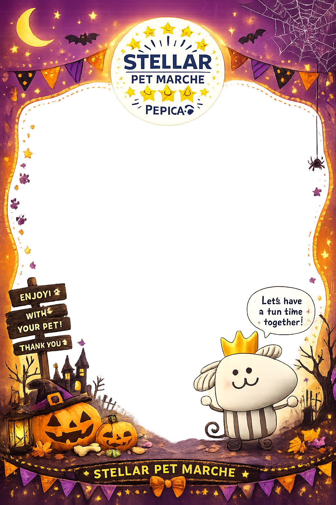

🎃 ハロウィン限定
ARカメラ
カメラの使用を許可すると、
限定フレームを重ねて撮影できます。
カメラの許可状態を確認しています…
カメラが「拒否」になっている場合
ブラウザのアドレス欄付近にある鍵・設定アイコンから、このサイトの「カメラ」を許可へ変更してください。
iPhone（Safari）
アドレス欄の「ぁあ」→「Webサイトの設定」→「カメラ」→「許可」
Android（Chrome）
アドレス欄左の設定アイコン→「権限」→「カメラ」→「許可」
変更後、この画面の「設定変更後にもう一度確認」を押してください。
ブラウザのアドレス欄付近にある鍵・設定アイコンから、このサイトの「カメラ」を許可へ変更してください。
iPhone（Safari）
アドレス欄の「ぁあ」→「Webサイトの設定」→「カメラ」→「許可」
Android（Chrome）
アドレス欄左の設定アイコン→「権限」→「カメラ」→「許可」
変更後、この画面の「設定変更後にもう一度確認」を押してください。